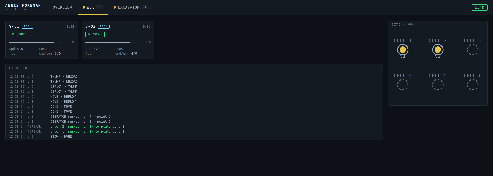
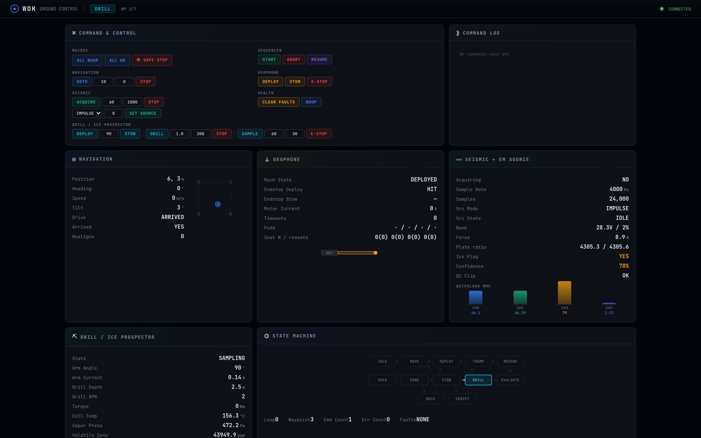

A micro-rover that surveys a site seismically, decides onboard whether it looks ice-bearing, and drills to confirm. Where drill and seismic sample the same ground, the drill calibrates the seismic, so the survey can support resource claims at depths the drill cannot reach.
The vehicle runs the cycle below autonomously at each waypoint in an uploaded plan. Any critical fault drops the vehicle to a SAFE state with the array stowed and the drill parked, where it waits for ground.
Dead-reckoned drive to the next waypoint in a persistent start frame. Ground can hold the vehicle after a move for a pose check and realignment before anything is placed, so site stamps stay honest over a long traverse.
Four geophone pods are placed along a line to create the survey aperture. A low-energy test shot scores each pod's actual ground coupling before data is taken. Poorly seated pods are reseated within bounded attempts, and coupling is recorded as a measured condition, not assumed from a mechanism endstop.
Repeatable strikes from a compact electromagnetic source, recorded against a hardware-referenced zero time and stacked per site. First-break arrivals are picked onboard for every pod.
The picks are inverted onboard for refractor velocity and layer depth. The site is flagged on the probability that the refractor is ice-fast, and that flag, with battery state, gates the drill decision without a ground round trip.
A drill cycle logs a stiffness profile with depth and runs evolved-gas volatile analysis on the sample. The release temperature classifies how the water is bound, which matters for extraction cost, not just presence.
Pods are retrieved with per-pod recapture confirmation and the vehicle moves on. A mission cannot end without at least one drill: the sequencer returns to its best-scoring site for a calibration tie, because that tie is what anchors every inferred claim across the survey.
Mission sequencer, navigation, geophone array, seismic acquisition and source control, drill, and health/FDIR, on the core Flight System (Draco). All hardware access goes through a per-subsystem hardware abstraction layer; the flight-hardware side of that layer is a documented porting boundary.
Complete multi-site missions run against a physics simulation in which one shared subsurface model feeds both the seismic and drill instruments. A correct inversion of the synthetic seismic agrees with what the synthetic drill finds, so onboard algorithms are checked against known ground truth, not against themselves.
Per-shot raw traces, per-site stacks with picks, per-site coupling records, and per-cycle drill logs with stiffness and evolved-gas curves. Every product carries the surveyed site pose. Ground analysis fits a velocity-to-ice transfer function from the drill ties and ranks prospects as confirmed or inferred.
Command console with full test suites and file downlink, a live web dashboard of the mission state machine and telemetry, and site-analysis tooling for refraction inversion, tie points, and prospect ranking. Plans are ground-uploadable, including per-waypoint drill and recalibration flags.
The Subsurface Ice Deposit Assessment page defines the capability class without naming a vehicle. WOK is the first-tier instance of it: the vehicle that validates the method and the calibration discipline before larger sources and longer arrays are worth building.
The table maps each SIDA functional requirement to how WOK addresses it today. Where the prospecting tier cannot fully meet a requirement by design, that is stated rather than softened.
| Req | Function | How WOK addresses it |
|---|---|---|
| SIDA-F-001 | Depth of investigation | Drill samples directly to 5 m. The refraction survey infers layer velocity and interface depth below drill reach, in the band a small-aperture array can resolve. Deposit-scale tens-of-meters depth is the next tier's job. Partial · by tier |
| SIDA-F-002 | Deposit geometry | Per-site refractor depth and velocity; lateral variation emerges across sites in a survey plan. Presence and depth class, not full 3-D extent. Partial · by tier |
| SIDA-F-003 | Ground-truth calibration | The mission-success gate. Seismic and drill at the same pose form a tie point; the sequencer will not end a mission without one, and the velocity-to-ice transfer function is fit from ties and carried into every extrapolated claim. Enforced onboard |
| SIDA-F-004 | Uncertainty quantification | Per-pick confidence, stack coherence, coupling scores that deweight weak channels, a probabilistic ice flag onboard, and confirmed-versus-inferred labels on every ranked prospect. Carried in products |
| SIDA-F-005 | Survey repeatability | Every product is stamped with surveyed pose in a persistent frame with ground-commanded realignment. Archived formats are documented for independent reprocessing, so later missions can densify or repeat coverage. Designed in |
WOK is not a standalone instrument demonstration. It already runs as a vehicle class inside the Aegis surface-operations stack: the same flight software binaries are dispatched by the fleet coordinator, report through the Foreman shift board, and complete survey orders on telemetry, not on a timer. The mixed-fleet surface operations page documents that demonstration with rover, tanker, and WOK assets working one scenario.


The software proves the choreography and the calibration discipline. It does not settle the geophysics. These are the questions a collaborator would be asked to own.
Which acquisition parameters are worth having on a micro-rover: pod count and spacing, stack count, sweep versus impulse, and how much of that should adapt onboard to what the first shot shows.
What a four-pod, six-meter line can and cannot resolve in lunar regolith: depth of investigation, velocity contrast needed for a confident refractor pick, and the failure modes of a thin ice-cemented layer.
How to validate the onboard evaluation in relevant conditions, such as regolith simulant testbeds, and what a defensible velocity-to-ice-content transfer function looks like with a handful of drill ties.
How a plate source and rover-placed pods actually couple to dry, electrostatically active regolith, and whether the low-energy coupling check the software performs today measures the right thing.
Discussion welcome through the engagement page.